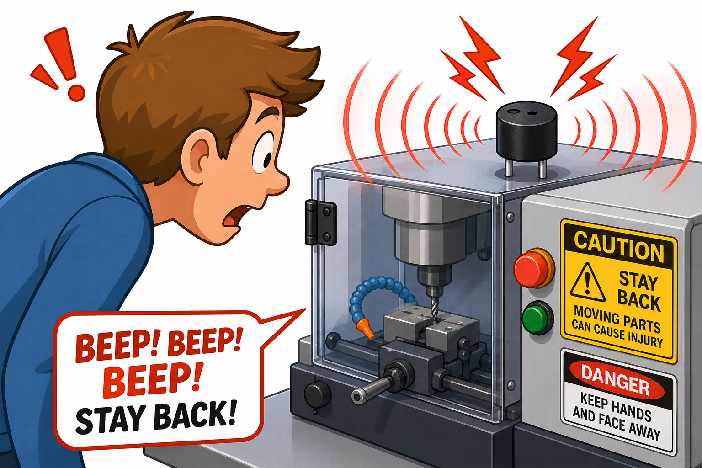

Sound alert
DetectProgram needs to alert
→
DecideUser must hear it now
→
DoBeep the buzzer
A piezo buzzer is a small part that makes a buzz or beep when your code turns it on.
It changes electrical energy into vibration, which creates a sound you can hear without needing a screen or lights.
Your projects can use a buzzer for alarms, countdowns, warnings, or fun sound effects.

from gpiozero import Buzzer
buzzer = Buzzer(17)
buzzer.on()from picozero import Buzzer
buzzer = Buzzer(2)
buzzer.on()buzzer.on(), buzzer.off(), or buzzer.beep() later in your Do code.